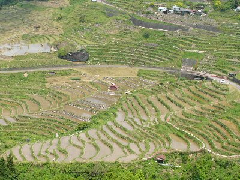
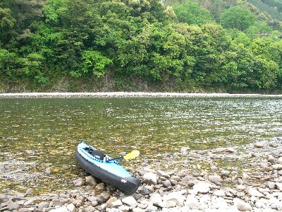
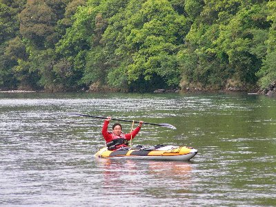
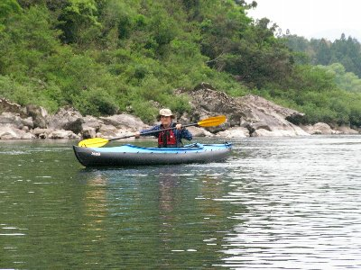

熊野川カヌー下り | 2007年5月 |
|---|---|
| 三重県から和歌山県に入ってすぐ（と言うか境目）に熊野川は位置しています。 初心者でも下れると、カヌー本には書いてあったので、友人と行ってみようと言う事になりました。 この友人とは、以前釧路川を一緒に下り、沈（ちん：艇がひっくり返り、搭乗者が川に投げ出されること）した事があって以来の、川下りです。（湖は途中ありましたが） 私の艇も川下りをしたことが無いため、初心者でも大丈夫な場所にしようとチョイスしたのですが、熊野神社への川の参拝道として、世界遺産登録されている立派な川でした。 川下りとしても有名らしく、沢山のカヌーイストが見受けられました。 また、ウォータージェット船なる観光船が、上流の瀞峡（どろきょう：世界遺産登録外だが、川から眺める渓谷が素晴らしく綺麗な場所）まで運行されています。 初日は移動日。 私は静岡から、友人は岡山から車で来る為、初日は殆ど移動に時間を取られてしまい、河原にテントを張り、肉と酒を買って、再開を祝して乾杯です。焼肉とビール、最高です♪ | |
|  丸山千枚棚田 |  川下りする場所。ちょうど強敵ウォータージェット船が通る |
| 二日目 天候晴れ。上流まで艇を運び、再びこの地に上陸する為、テントはそのままに。 近くのウォータージェット船乗り場から、艇を持って上流まで行き、下って来よう計画でしたが、どうも片道切符は無いらしく、往復料金だと結構高かったので、2台ある車を活用し、友人の車一台で上流へ。 ウォータージェット船折り返し地点近くの、瀞峡からスタートです。 私の艇は組立式なので、30分ほど時間がかかってしまいますが、友人は、最近購入したエアータイプのカヌーなので、10分程で完了。 ちょっと練習してから出発です。 この川で気をつけ無ければならないポイントは、先ほどから出ているウォータージェット船です。 この船、モーターボートのように、物凄いスピードと、大きな波を掻き立てて走行するため、狭い川幅一杯に波が押し寄せる為、横波に弱いカヌーを、船が通るたびに波に対して直角になるよう、維持しなければなりません。 普段なら1時間に１本の運行なのに、ＧＷのお陰か次から次へと船が来ます。酷い時は立て続けに２隻来るので大変です。しかもちょっぴり時間差。 | |
 朝から元気よくお好み焼き |  目の前をウォータージェット船が通り抜ける |
| 川下り自体は、本当に緩やかな流れなので、逆に漕がなくては下って行かないくらいですから、のんびりした旅です。所々の瀬（せ：川の流れが急になったり、波が立っていたり落ち込んでいたりする場所）と呼べない位の瀬も、初心者ですからドキドキしながら下っていましたが、ウォータージェット船にはかないません。（これも慣れると、どうって事は無いのですが） 夕方、予定より時間オーバーしてキャンプ地着。 友人の車を取りに行くべく私の車で再度上流へ。 行きがてら、夕食の買出しと、日帰り温泉に入浴。 この温泉は、安くて綺麗でいい所でした。露天もあるしね。 本日の夕食はちゃんこ鍋。 ビールと日本酒をグビグビやりながら、昼間の疲れとアルコールで早々就寝。 | |
|  清き河原 |  一緒に下る友人 |
| 三日目 天候曇り。午後には雨が降るとの事だったので、撤収が大変になるテントを片付ける。 本日は天候の具合もあるため、早めに切り上げるべく、キャンプ地からスタートし、下流の道の駅までの短い距離を楽しむことにした。昨日と逆手順で、道の駅に車を一台置いてスタート。 ウォータージェット船乗り場を過ぎると、もう行きかう船に脅える事は無い。 昨日より若干流れがあり、瀬も出てくる。船が行き来しないので、ザラ瀬（川底が浅く、艇の下がすってしまう場所）の心配も出てくるが、昨日より多少度胸が付いて、瀬もクリヤーしていく。 本日はカヌーマップにも乗っている１級の瀬（１級が一番簡単。３級とかだと、川が軽く落ち込んでいる為厳しい）が出てくるが、これもクリアー。（って一番簡単な瀬なんだから、自慢できる筈は無いのだが） しかし、マップに乗っていない場所でも、吸い込まれそうなエディー（本流から離れ、渦を巻いている、水のたまり場）や、流れが速い場所で、波が艇の上までかぶる箇所（これ表現でいくと1.5級位あったのでは？）が有ったりと、アドレナリンが分泌される箇所はいくつかあり、川下りしてるって実感が湧いて来て、とても楽しかったです。 昼過ぎには到着して艇を乾かしがてら、昼食のパスタを茹でて熊野川下りを終了しました。 この先の熊野川（下流）は、緩やか過ぎて楽しくなさそうなので、ここで止めて良かったのかも知れません。 | |
|  My 艇 |  ゆったりとした流れの熊野川 |
| この日は、温泉に入り、中華料理屋で晩飯を食べて、道の駅にて車中泊。 よく考えれば、ちゃんとした店で食べたの初めてでした。 道の駅では、またまたアルコールを摂取し、いい気分で就寝。 予報より遅かったけど、夜半から雨が降り出して来ました。テント仕舞って良かったです。 四日目 移動日 朝早くから道の駅では朝市が開かれていて、名物のサバ鮨ならぬサンマ鮨を頂く。（メハリ寿司は初日に食したので） 来たついでに（ついでと言うと怒られそう）と熊野大宮大社を参拝し、お土産かって帰路に着く。 和歌山には、まだまだ初心者に適した川があるというので、また訪れてみたいです。海も綺麗そうでいいかも知れません。 | |
| 写真＆コメント ｂｙ べっしー | |